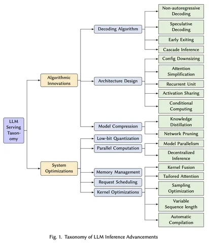
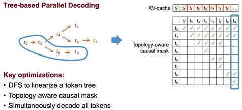

Соскучились? Специально для Душного NLP Роман Горб из команды ускорения инференса YandexGPT поделился релевантными его рабочей области статьями с ICML 2024.
Towards Efficient Generative Large Language Model Serving
Отлично структурированная статья и рассказ об LLM Serving — о челленджах, их причинах и решениях. Сначала описывается генеративный сценарий и его природа. Авторы отмечают, что корпорации вкладываются в LLM, размеры моделей растут и появляются новые семейства. Но есть и платформы, на которых модели хочется деплоить, что требует инженерных усилий. Где-то между находится LLM Serving. Задача области — поиск компромисса между качеством и скоростью (compute budget), о чём и рассказывает статья.
На первой картинке — 2 подкласса методов: алгоритмические и системные. С подробностями предлагаю ознакомиться самостоятельно, но выделю часть из них.
Speculative Decoding
Базово для этого метода нужны 2 модели: draft и verifier. Первая быстро и дёшево генерирует гипотезы; вторая — выбирает из них валидное продолжение так, чтобы генерация происходила из распределения verifier-модели. Чем больше токенов «угадывает» draft-модель, тем выше ускорение. В продвинутых версиях растёт утилизация ресурсов GPU.
Свежие работы (EAGLE и MEDUSA) предлагают уменьшить draft-модель для большего ускорения при сохранении качества. Авторы дообучают небольшие головы поверх verifier-модели, что снижает оверхэд и ускоряет процесс даже в сложных сценариях с высоким throughput токенов. Draft-головы генерируют гипотезы в виде дерева, а не списка (см. картинку 2), что повышает точность принятия токенов.
Архитектурная Оптимизация
В MobileLLM и Rethinking Optimization and Architecture for Tiny Language Models исследуют вопрос оптимальной архитектуры моделей до 1B для мобильных устройств. Авторы за тот же compute получили значительные + 4 пп качества на бенчмарках с помощью SwiGLU-активаций, глубоких, а не широких сети, shared-эмбеддингов, Grouped Query Attention, init из весов более крупных моделей и прунинга.
Душный NLP
